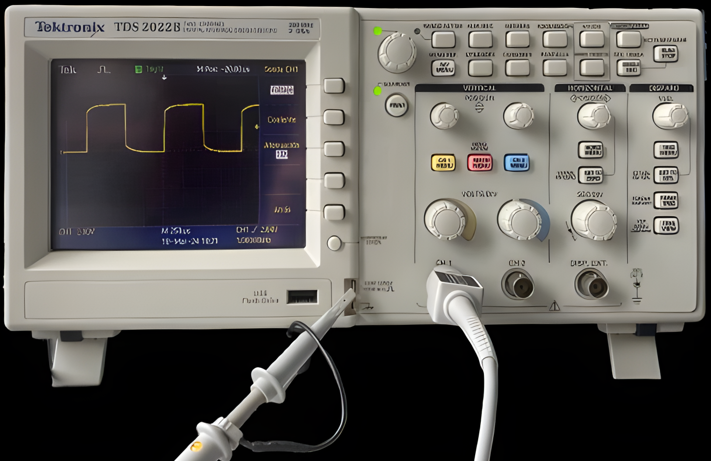

Compensa las puntas del osciloscopio
1. Antes de iniciar el uso del osciloscopio siempre debes compensar las puntas con las que vas a trabajar.
2. Nota: " Recuerda que las puntas x1 NO se compensan y las x10 SI deben compensarse. "
3. Arrastra la barra hasta que observes que las puntas del osciloscopio estén compensadas y haz clic en "Seleccionar".
